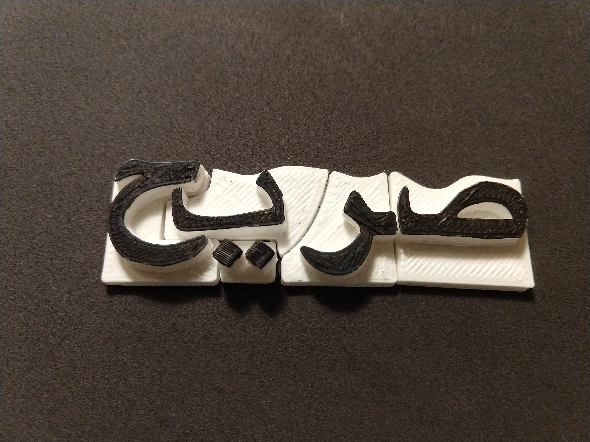
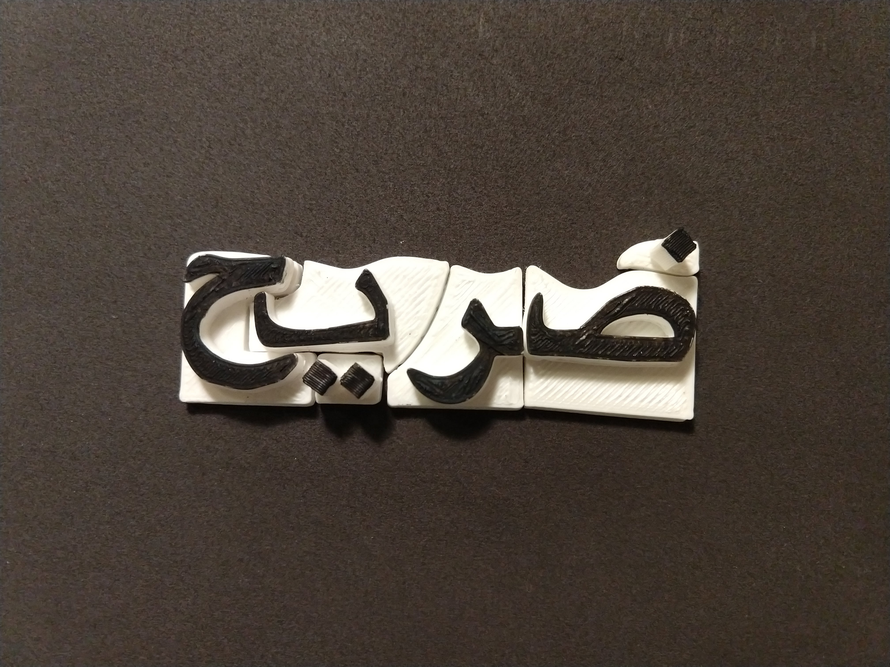

Arabic Word Scramble
Sometimes honesty in NOT the best policy.
This is a 3D word scramble/puzzle using Arabic characters. The puzzle uses the word صريح which means honest. When you change the ص in to a ض the word becomes ضريح which means tomb. When you hover a phone camera above the puzzle, depending on the way the words are arranged, the English meaning of the word will be augmented in reality.
.png)
.png)
Artist’s Statement
My roommate and I were discussing the similarities between Urdu, Hindi, and Arabic; Urdu and Hindi share a lot of basic vocabulary words but the scripts look so different. Urdu uses a script almost indistinguishable from Arabic scripts, save for a few characters that are not in the Arabic alphabet. At first, through this project, I wanted to show how interchangeable so many languages are, even if they look or sound different they are all related. However, after doing a little bit of research on Arabic, I learned that Arabic itself so dynamic. The meanings of words can change vastly just by phonetics or diacritics. I think this project could become a series that shows people how connected we all are, despite our different backgrounds and cultures, communication is something that brings us together. Even if we communicate through different languages, all of those languages are connected in some way or another. In the future, I would like to create puzzles between languages that people normally perceive as different, so different that you cannot find a middle ground. I would like to show them that there is a middle ground for everything.
I created a 3D word scramble/puzzle using Arabic characters. The puzzle uses the word صريح (sarih) which means honest, and when you change the ص (saud) into a ض (daud) the word becomes ضريح (darih) which means tomb. This signifies that sometimes being honest is not the right choice, being honest can put you in a tomb. It can create unnecessary problems if someone asks for your honest opinion and they disagree with it. A different interpretation can be that for some people honesty has led them to their death. This was the case for Sir Thoma More, a philosopher during the Renaissance, when his trial for “conspiring” against the King led him to his execution. More only stated what he believed to be true, that the King could not have supremacy over the church. In denying the King’s absolute power More was executed for his honesty. In a slightly more modern sense, being honest with your true self and sharing it with a world that isolates anything outside of the norm can also lead to you being entombed whether it be literally or through isolation. The concept of using these specific words can be open to various interpretation. When I improve the puzzle and hopefully make more, I would like to focus on the meaning of using the different languages and how everything is interconnected.
I ran through a few rough patches when making this piece, but all in all, I think it turned out well. The goal was that when a person completed the puzzle they would hover their phone camera above the puzzle; depending on the way the words were arranged, the English meaning of that word would show up in augmented reality. I began with designing the words in Arabic in Illustrator which was foolish because I needed a 3D file format to 3D print. Fortunately, since the shapes were already designed, I was able to import them into Photoshop, and select “convert to 3D“. It sounds simple but because this was only my second time 3d printing, it took a while to figure it out. I had to reprint some pieces a few times because their edges were uneven and did not fit well together. Once I was done 3D printing, I moved on to working in AR which is something I never did before. Luckily I was able to get help with the basics from a friend who used Vuforia and Unity, which is what I was also using. Interestingly, when I started working on the AR alone I learned about all the things that did not work. I was not able to finish the AR in time, but now I know what the project should look like in order for it to work. As all learning experiences go, this step will also take some time, but I look forward to what I learn from it.